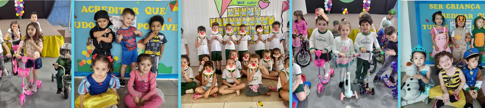
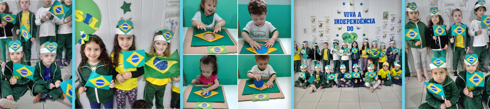
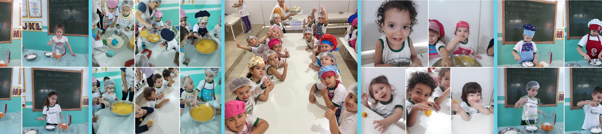

O Dia das Crianças é uma celebração dedicada à alegria, inocência e vitalidade que as crianças trazem para o mundo. Comemorado em diversos países, esse dia especial destaca a importância de garantir um ambiente seguro e estimulante para o desenvolvimento infantil. É uma oportunidade para reconhecer a pureza da infância, promover o direito ao brincar e à educação, e fortalecer a responsabilidade coletiva em proteger e nutrir o futuro. No Dia das Crianças, celebramos a magia que as crianças trazem às nossas vidas e reafirmamos nosso compromisso em criar um mundo onde cada criança possa crescer feliz, saudável e plena.
A Independência do Brasil, proclamada em 7 de setembro de 1822, representa um marco histórico que simboliza a conquista da autonomia e liberdade do país. Dom Pedro I, às margens do Rio Ipiranga, declarou a independência, rompendo os laços coloniais com Portugal. Esse ato coragem reflete a busca pela autodeterminação e a afirmação da identidade nacional. A independência é celebrada anualmente no Dia da Pátria, lembrando-nos do espírito resiliente e da luta pela soberania que moldaram a história do Brasil, consolidando-o como uma nação livre e soberana.
Introduzir crianças na cozinha é uma experiência enriquecedora que vai além do simples preparo de alimentos. Ao envolver-las nesse universo, cultivamos habilidades motoras, promovemos o entendimento sobre a origem dos alimentos e estimulamos o paladar de forma divertida. Além disso, a cozinha se torna um espaço para aprender sobre medidas, cores e sabores, enquanto fortalece os laços familiares. Essa interação proporciona não apenas refeições saudáveis, mas também desenvolve autonomia e responsabilidade, construindo uma base sólida para uma relação positiva e rigorosa com a alimentação.
